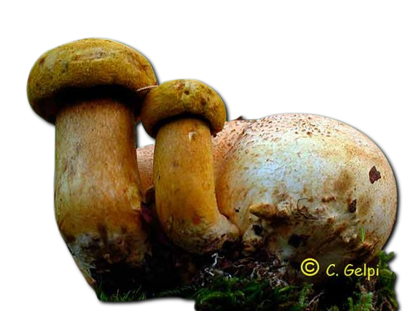
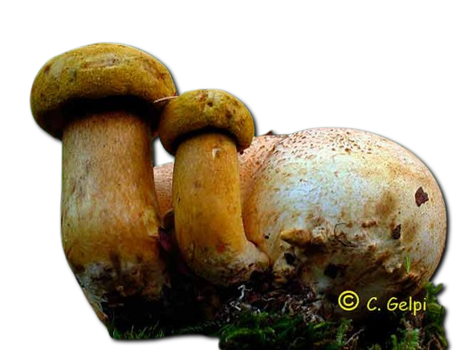

Descripción morfológica
Scleroderma citrinum, conocido como "falso pedo de lobo" o "escleroderma común", es un hongo gasteromicete de la familia Sclerodermataceae. Sus cuerpos fructíferos son globosos a piriformes (3-10 cm de diámetro), con una gruesa corteza externa (peridio) de color amarillo sucio a ocre, cubierta de escamas o verrugas negruzcas que le dan aspecto de "piel de sapo". Al madurar, el peridio se abre irregularmente en la parte superior liberando una masa esporal (gleba) pulverulenta de color púrpura negruzco. Carece de pie bien desarrollado, presentando en su lugar pseudorrizomorfos blanquecinos en la base.
Características distintivas
- Peridio: Grueso (2-5 mm), quebradizo, con escamas piramidales oscuras.
- Gleba: Inicialmente blanca y firme, volviéndose negra y polvorienta.
- Esporas: Globosas, equinuladas, 8-12 µm de diámetro, con retículo incompleto.
- Olor: Desagradable a tierra húmeda o ajo en ejemplares maduros.
Distribución y hábitat
Especie cosmopolita común en bosques templados y mediterráneos de Europa, América del Norte, Asia y norte de África. Crece en suelos ácidos a neutros (pH 5-7), preferentemente en bosques de frondosas (robledales, hayedos) y menos frecuente bajo coníferas. Fructifica desde finales de verano hasta otoño (agosto-noviembre), a menudo en grupos de varios individuos. Es especialmente abundante en claros forestales, bordes de caminos y zonas perturbadas, mostrando cierta preferencia por suelos arenosos o ricos en humus.
Ecología y asociaciones
- Micorrizas: Forma asociaciones ectomicorrícicas principalmente con árboles del género Quercus y Fagus.
- Dispersión: Las esporas son liberadas por impacto de gotas de lluvia ("dispersión por salpicadura").
- Bioindicador: Su presencia indica suelos no compactados con baja contaminación.
Toxicidad y composición química
Contiene esclerocitrina (pigmento amarillo) y varios triterpenoides (sclerodermatales) que pueden causar trastornos gastrointestinales (náuseas, vómitos, diarrea) si se ingiere. Los síntomas aparecen 1-3 horas post-consumo y suelen ser autolimitados. Aunque no es mortal, su confusión con Lycoperdon spp. (comestibles en estado joven) es frecuente. Estudios recientes han identificado escleroglucano en su composición, un polisacárido con potencial inmunomodulador.
| Compuesto | Concentración | Efecto |
|---|---|---|
| Sclerocitrina | 0.5-1.2 mg/g | Pigmentación amarilla |
| Sclerodermatales | 0.3-0.8 mg/g | Irritación gastrointestinal |
Diferencias con especies similares
- Lycoperdon perlatum: Superficie con verrugas caducas, gleba blanca mucho más duradera.
- Scleroderma verrucosum: Peridio más delgado y verrugas más pequeñas.
- Pisolithus arrhizus: Gleba con cámaras separadas, no se vuelve completamente pulverulenta.
Importancia ecológica
Desempeña un papel crucial en los ecosistemas forestales:
- Facilita la absorción de nutrientes (especialmente fósforo) por los árboles asociados.
- Contribuye a la estructura del suelo mediante la producción de glomalina.
- Sus esporas son fuente de alimento para diversos artrópodos del suelo.
Curiosidades
- En la medicina tradicional europea se usaba secado y pulverizado para tratar heridas.
- Su nombre "citrinum" hace referencia al color amarillo limón del peridio.
- Los ejemplares maduros pueden "explotar" al ser pisados, liberando nubes de esporas.
Precauciones
- No consumir bajo ningún concepto (tóxico incluso en pequeñas cantidades).
- Evitar inhalación masiva de esporas (puede causar irritación respiratoria).
- Lavar manos tras manipulación para evitar transferencia accidental a alimentos.